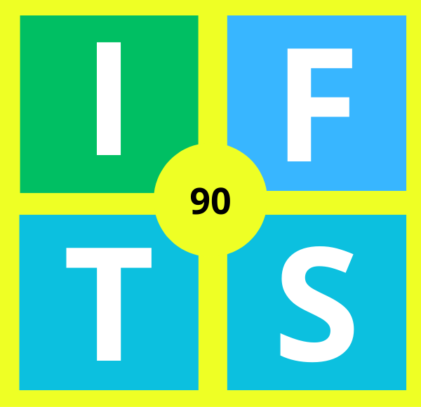

Instituto de Formación Técnica Superior Nº90
Ciudad Autónoma de Buenos Aires
Carreras
Oferta educativa
Novedades
Actualidad institucional
Académico
Información de interés
Ciudad Autónoma de Buenos Aires
Oferta educativa
Actualidad institucional
Información de interés